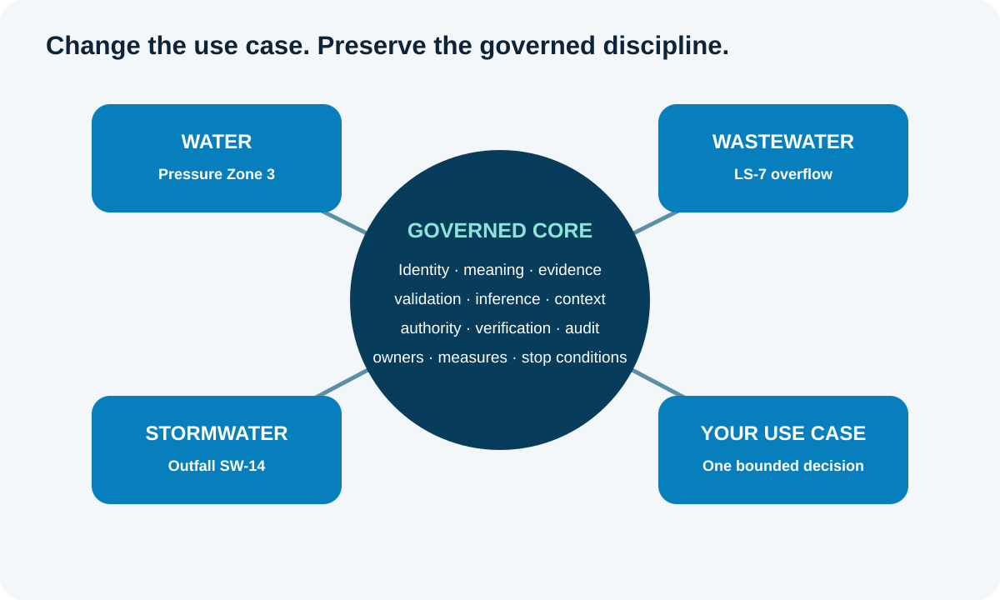
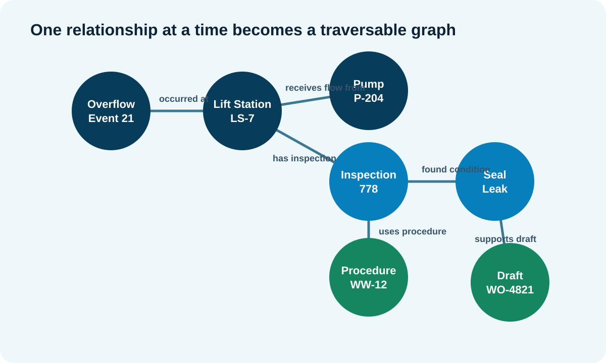
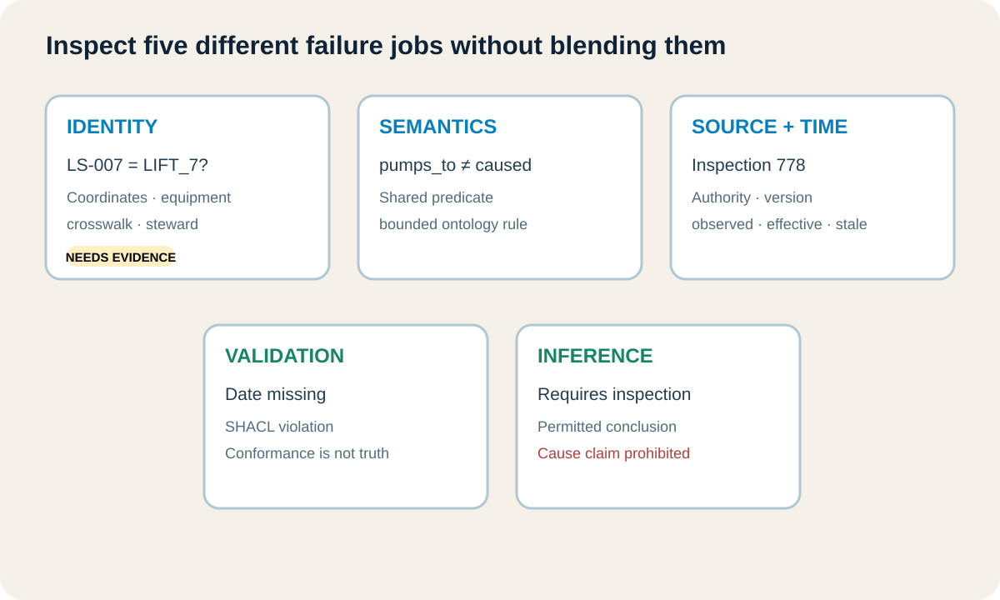
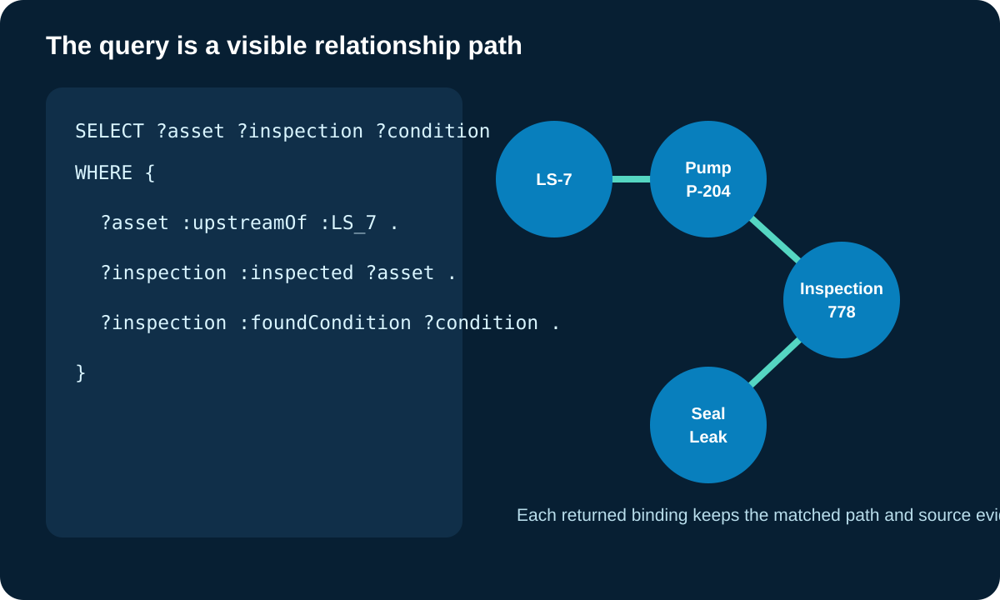
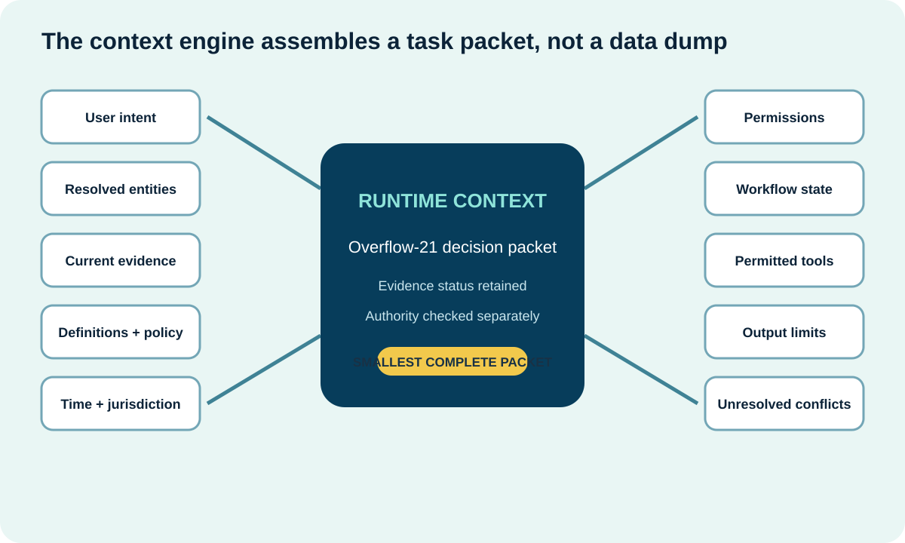
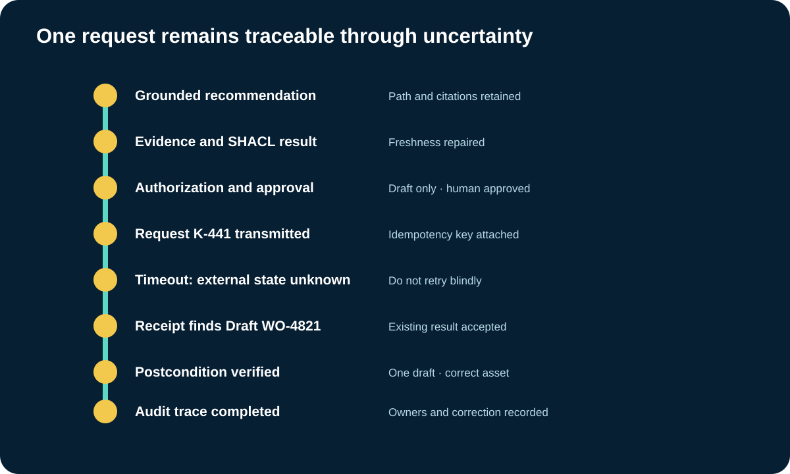
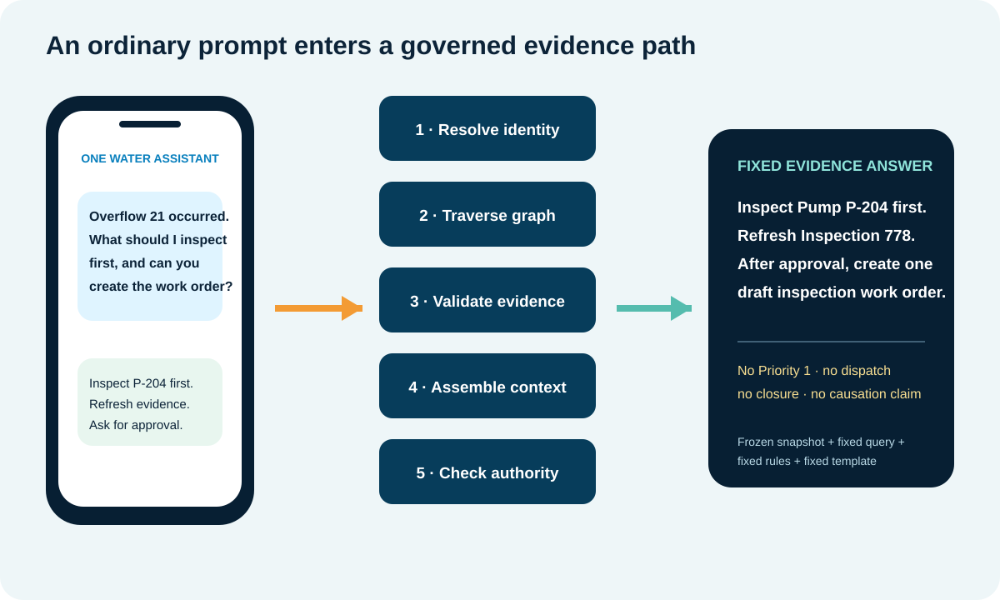

Know enough, permit deliberately, prove the result
Ask whether the evidence is fit, whether this actor may act, and whether the result can be verified.
Build, run, break, repair, and adapt one complete utility question-to-action Knowledge Spine pattern.
Misconception we will change: Once the architecture is designed, the relationships, evidence, context, and action controls will work automatically.
Ask whether the evidence is fit, whether this actor may act, and whether the result can be verified.
Define identities, validation, policy decisions, tool schemas, request keys, recovery, verification, and audit events.
Name approval thresholds, prohibited actions, accountable owners, review cadence, incident response, and correction authority.
The Module 19 Pilot Canvas is approved for rehearsal. The utility question is bounded. The architecture identifies sources, mappings, validation, context, and action controls. Then the first simulated run fails in three places: the lift station has conflicting identifiers, the newest inspection is outside the required freshness window, and the signed-in operator cannot approve the requested priority.
That is not a reason to hide the failure. It is the reason to run the laboratory. A diagram tells us what should connect. A rehearsal shows whether identity, meaning, evidence, permissions, tools, verification, and ownership actually behave as one governed system.
Nothing in this laboratory touches a real utility system. Every record, tool call, approval, and work order is simulated. Your job is to make the decision chain explainable and testable before anyone proposes production use.

Preserve identity, meaning, evidence, context, authority, verification, and audit.
Use pressure zones, customers, facilities, and field inspection evidence.
Use overflow, lift station, upstream assets, and maintenance evidence.
Use outfall, catchments, debris, inspections, and maintenance.
Supply one bounded question, decision, action, owner, tests, and stop conditions.
Pressure Zone 3, LS-7 overflow, Outfall SW-14, and a custom decision use different entities and sources. All preserve identity evidence, meaning, provenance, validation, inference limits, context, permission, verification, audit, owners, measures, and stop conditions.
Choose the strongest answer, then check it. The feedback explains the boundary.
Begin with a question that names a real decision. For wastewater, ask which upstream assets and current evidence a supervisor should review before approving one draft inspection work order for Overflow Event 21. Do not begin with improve operations, build the enterprise graph, or automate overflow response. Those phrases do not tell the team what evidence, meaning, action, or measure must exist.
The laboratory also includes water and stormwater transfer modes. The nouns and sources change, but the discipline stays fixed: one question, one decision, one permitted action, one accountable owner, and visible stop conditions.
Work through each case in order. Choose the strongest governed response. The prototype records which laboratory stages are ready, need repair, or must stop.
The machine does not receive a complete understanding all at once. We name the event, lift station, pumps, wet well, force main, sensor, inspection, procedure, work-order draft, supervisor approval, and evidence record. Then we state how one thing relates to another.
Read every triple aloud. Overflow Event 21 occurred at Lift Station LS-7. Pump P-204 pumps to LS-7. Inspection 778 inspected P-204. Inspection 778 found a seal leak. Procedure WW-12 applies to overflow response. These small statements create the graph path the application can inspect.

Overflow Event 21 occurred at LS-7.
Pump P-204 pumps to LS-7.
Inspection 778 inspected P-204 and found a seal leak.
Procedure WW-12 and current evidence can support one draft inspection work order.
Overflow Event 21 occurred at LS-7. Pump P-204 pumps to LS-7. Inspection 778 inspected P-204 and found a seal leak. Procedure WW-12 applies to overflow response. The governed evidence supports one draft inspection work order.
Match each ordinary-language question to the job that answers it. Check all rows together, then revise any row that needs another look.
LS-7 appears as LS-007 in the maintenance system, LIFT_7 in telemetry, WW-LS-7 in the geographic system, and North River Lift Station in the incident report. Similar labels are candidates, not proof that every record describes the same asset.
The laboratory deliberately offers one weak match. Watch what happens if you accept it: the wrong pump enters the upstream path, the evidence packet cites the wrong inspection, and the proposed work order targets the wrong asset. Identity is not clerical cleanup. It controls every downstream answer.

Prove that source identifiers refer to LS-7.
Preserve the meaning of each relationship.
Retain authority, version, and freshness.
Test declared structural requirements.
Permit inspection need and prohibit unsupported causation.
LS-007 and LIFT_7 need identity evidence. pumps_to does not mean caused. Inspection 778 needs source authority and time. Missing date causes a validation violation. Requires inspection is permitted while caused overflow is prohibited.
Select every item the bounded task needs. Leave irrelevant or unauthorized material outside the packet.
The data model structures the maintenance and incident records. The taxonomy classifies asset and event types. The ontology defines shared concepts and relationships. The semantic layer maps those meanings to actual fields, identifiers, APIs, and documents. Runtime AI context packages only what this task needs now.
If these layers blur together, ownership and testing blur with them. The Live Lab keeps each layer inspectable so the learner can see whether a failure belongs to structure, classification, shared meaning, enterprise connection, or task-time context.
Say the answer before selecting each card. Select all four cards to complete this retrieval check.
The maintenance table, geographic asset record, telemetry observation, inspection PDF, overflow procedure, and incident report do not need one identical access pattern. Query authoritative structured records in place when that meets the workload. Index document passages for retrieval. Cache or materialize only when latency, resilience, cost, or repeated transformation justifies another governed copy.
Every choice has consequences. A virtual query can fail when a source is unavailable. A copied graph can drift. An index can retrieve a similar passage without proving that the extracted claim is approved. The laboratory makes freshness, availability, cost, and authority visible beside the choice.
Choose the correct access or traversal response for each source condition.
A readable SPARQL pattern asks for assets upstream of LS-7, inspections that examined those assets, and conditions those inspections recorded. The query is not magic. Each triple pattern must match explicit or permitted graph relationships.
Follow the highlighted path from Overflow Event 21 to LS-7, then upstream to Pump P-204, across to Inspection 778, and finally to the seal-leak condition. The result retains the evidence path instead of returning an unexplained label.

Find an asset upstream of LS-7.
Find an inspection that inspected the asset.
Find the condition recorded by that inspection.
Return P-204, Inspection 778, and Seal Leak with evidence.
The query asks for an asset upstream of LS-7, an inspection of that asset, and a condition found by that inspection. It returns Pump P-204, Inspection 778, and Seal Leak with the matched path.
The first inspection record lacks an inspection date and identified inspector. A SHACL shape can declare those requirements and produce a validation report. The learner repairs the record, reruns validation, and sees it conform.
Conformance does not prove the inspection happened or that the seal-leak observation is accurate. It proves only that the tested graph satisfies the declared shape. Factual review and source authority remain separate.
Choose the strongest answer, then check it. The feedback explains the boundary.
The graph explicitly states that Inspection 778 found a seal leak on Pump P-204. An approved rule may classify that pump as requiring inspection. The graph may not jump from that condition to the claim that P-204 caused Overflow Event 21.
The Live Lab labels asserted fact, permitted inference, unsupported assumption, and prohibited operational conclusion. This is the point where reasoning becomes useful without pretending it replaces engineering judgment.
Choose the strongest answer, then check it. The feedback explains the boundary.
The context package contains the user's intent, resolved entities, current cited evidence, definitions, applicable policy, time, jurisdiction, permissions, workflow state, permitted tools, and output constraints. The context engine retrieves, filters, validates, and assembles that package. It is not the package itself.
Remove the current time and stale evidence can look current. Remove permissions and a recommendation can be mistaken for authority. Remove the evidence status and an extracted document passage can look approved. The chamber makes each omission visible.

Add the request, entities, sources, and current status.
Add definitions, policy, time, and jurisdiction.
Add permissions, workflow state, tools, and prohibited actions.
Keep uncertainty and unresolved conflicts visible.
The packet contains user intent, resolved entities, current evidence, definitions, policy, time, jurisdiction, permissions, workflow state, permitted tools, output limits, and unresolved conflicts.
The simulated agent recommends reviewing Pump P-204 and refreshing Inspection 778 before creating a draft inspection work order. It shows the relationship path, citations, freshness state, unresolved uncertainty, and permitted next step.
Run the same question after changing the evidence snapshot. The wording may vary, and the evidence-based disposition may also change if the source, mapping, query, retrieval, context, policy, or external state changes. Record those stages instead of labeling one pipeline deterministic and another indeterministic.
The recommendation is grounded enough to consider. That does not answer whether this actor may create a work order now. The Agent Action Contract checks the authenticated role, evidence freshness, target identity, permitted tool, parameter limits, approval requirement, and stop conditions.
For this rehearsal, the operator may request or create one draft after current evidence and explicit approval. The operator may not set Priority 1, dispatch a crew, close work, change operations, or represent that causation is proven.
Select every item the bounded task needs. Leave irrelevant or unauthorized material outside the packet.
The simulated tool receives a bounded create-draft request with an idempotency key. One run succeeds. Another times out after transmission. The system does not know whether the draft exists, so it checks the receipt and reconciles external state before considering a retry.
This is where a seemingly small retry can create duplicate work. Safe recovery distinguishes failure before send, acknowledged success, timeout with unknown result, discovered existing work, failed verification, and outcome that still cannot be proven.

Retain the path, citations, freshness, and SHACL report.
Record draft-only permission and approval.
Send request K-441 with idempotency.
After timeout, discover the existing draft before retry.
Confirm one correct draft and retain the complete trace.
The grounded recommendation passes evidence and approval. Request K-441 times out. The system does not retry blindly. It finds Draft WO-4821 by receipt, verifies the postcondition, and completes the audit.
A success message is not the final evidence. The laboratory reads the simulated maintenance record back and verifies that exactly one draft exists for the intended asset with the approved description and evidence receipt.
The flight trace preserves the question, graph path, source evidence, validation report, inference boundary, context, policy decision, approval, request identity, tool result, reconciliation, verification, correction, time, and owners. A future reviewer can reconstruct the result without guessing from a chat transcript.
Switch from wastewater to a water pressure-zone case or a stormwater outfall case. Notice what changes: entities, relationships, sources, policies, measures, and action limits. Notice what remains governed: identity evidence, explicit meaning, provenance, validation, inference boundaries, context, permissions, verification, audit, and stop conditions.
Then use guided custom mode. Write one question, decision, and permitted action. Add entities, relationships, sources, controls, tests, and stop conditions. The exported configuration is a planning artifact. It is not production code, a credential, a graph-publication decision, or operational authorization.
Choose what the learner should preserve or change when transferring the pattern.
Configure one bounded water, wastewater, stormwater, or learner-supplied use case. The artifact is a planning configuration, not production code or authorization.
| Dimension | Full-credit evidence | Points |
|---|
Now bring the complete course together in one final demonstration. A supervisor asks an ordinary question on an iPhone. The screen does not send that sentence directly to a language model and hope for the best. The system resolves intent and identity, runs a fixed graph query, retrieves cited evidence, applies validation and inference limits, assembles current context, checks authority, and only then renders the answer.
For this demonstration, the answer is deterministic because the evidence snapshot, identifiers, query, shapes, inference rules, policy, permissions, and response template are frozen. Run the same configuration and the system returns the same evidence path and controlled answer. If any governed input changes, the disposition may legitimately change. A generative explanation outside this fixed mode may vary in wording even when the evidence does not.

Overflow 21 occurred. What should I inspect first, and can you create the work order?
Resolve the event, LS-7, Pump P-204, Inspection 778, and the signed-in role.
Run the fixed query and attach the frozen evidence path.
Detect stale evidence and prohibit an unsupported causation claim.
Add current policy, permissions, time, workflow state, and draft-only action limits.
Inspect P-204, refresh evidence, ask for approval, and create only one permitted draft.
The supervisor asks what to inspect first and whether the system can create a work order. The system resolves LS-7 and Overflow 21, traverses to Pump P-204 and Inspection 778, detects stale evidence, assembles policy and permissions, and checks authority. It answers: inspect P-204, refresh Inspection 778, and after approval create one draft. It may not set Priority 1, dispatch, close work, or claim causation.
Choose a utility scenario. Read the prompt as it appears on the simulated iPhone, then run the fixed trace. Watch identity, graph traversal, evidence, validation, inference, context, and authority complete before the answer appears.
Select a scenario to load the prompt.
Instructional simulation. No production system is connected.
The graph path will appear here.
Run the trace to produce the answer.No. Every graph record, source response, approval, tool call, and work order is simulated inside the course.
The query answers an evidence question. Action also needs current evidence, policy permission, an authenticated role, required approval, a bounded tool, safe execution, verification, and accountability.
No. It proves that the tested graph satisfies declared constraints. Source authority and factual accuracy require separate review.
Not directly. Treat it as a planning and review artifact. Real use requires utility-specific factual, practitioner, cybersecurity, privacy, accessibility, integration, credential, and release review.
That is a valid result. Use the laboratory to document the simpler governed table, report, search, or workflow pattern and why it satisfies the question.
Keep the discipline of bounded scope, identity evidence, explicit meaning, attributable sources, validation, inference limits, context controls, permission, verification, audit, ownership, and stop conditions.
This laboratory illustrates how RDF, SPARQL, SHACL, OWL, provenance, runtime context, and controlled action can work together. It does not claim that a graph guarantees truth, safety, permission, or operational value.
See the concepts, sources, competency, and evidence boundary behind this module.
Discuss which utility action should act, ask, refresh, clarify, or stop. Community discussion is not governed evidence.
Complete the opening check, fifteen-stage Live Lab, distributed concept checks, path laboratory, transfer laboratory, and Portable One Water Knowledge Spine Use-Case Configuration.